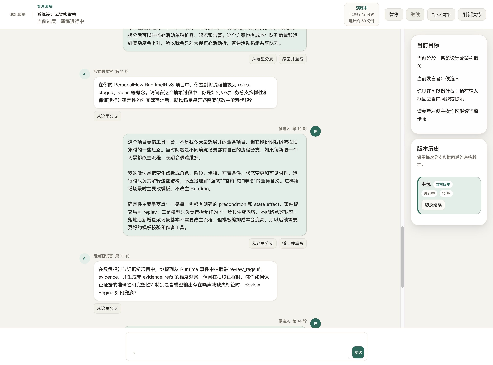
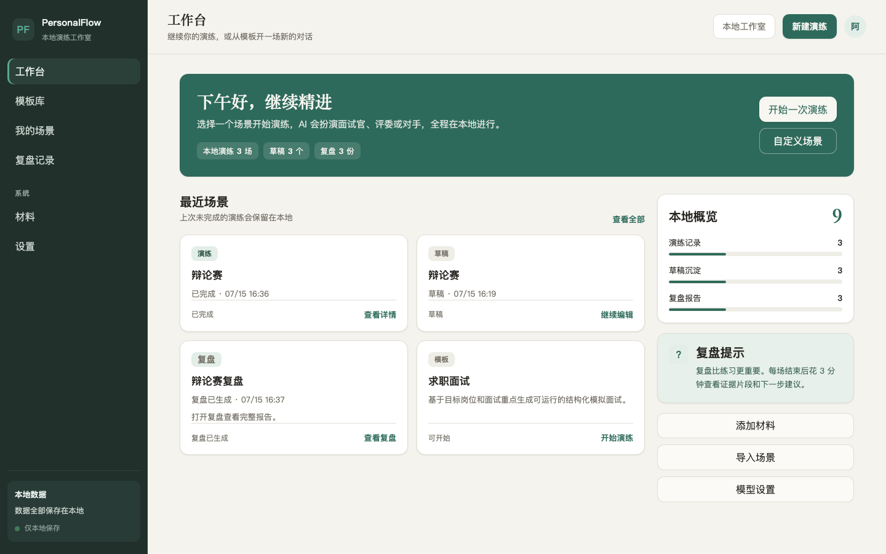
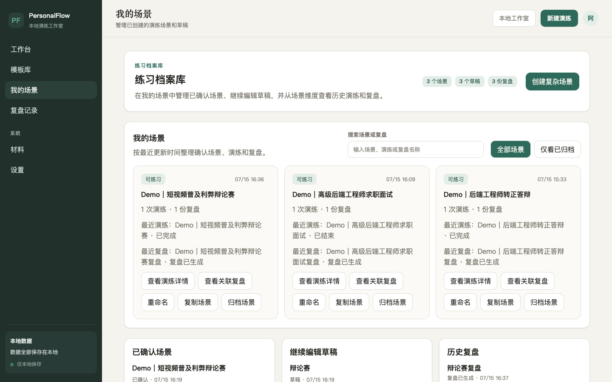
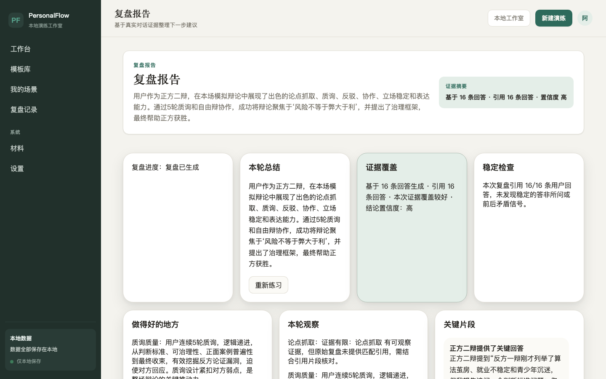
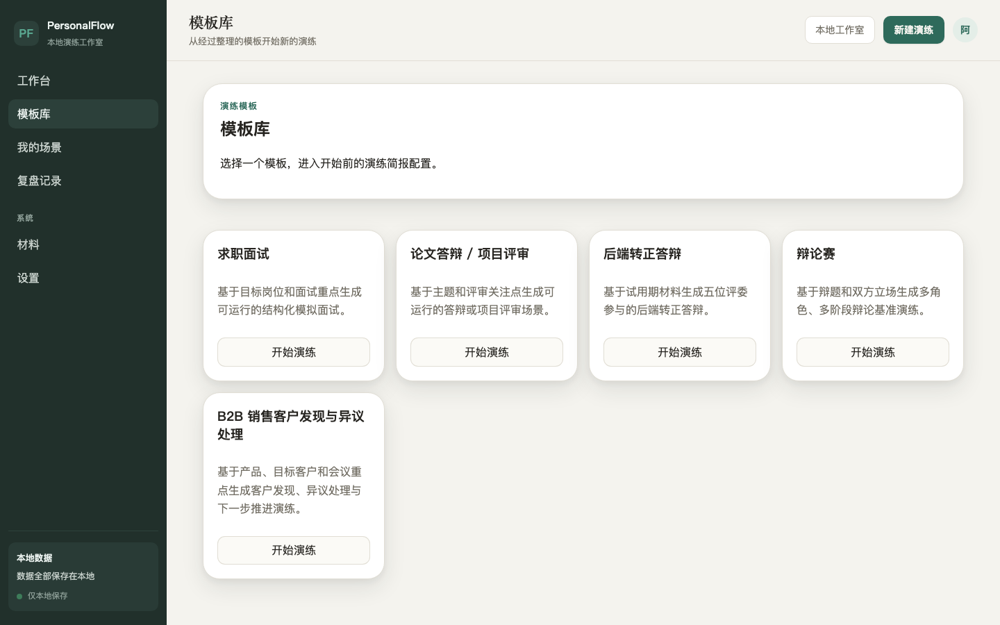
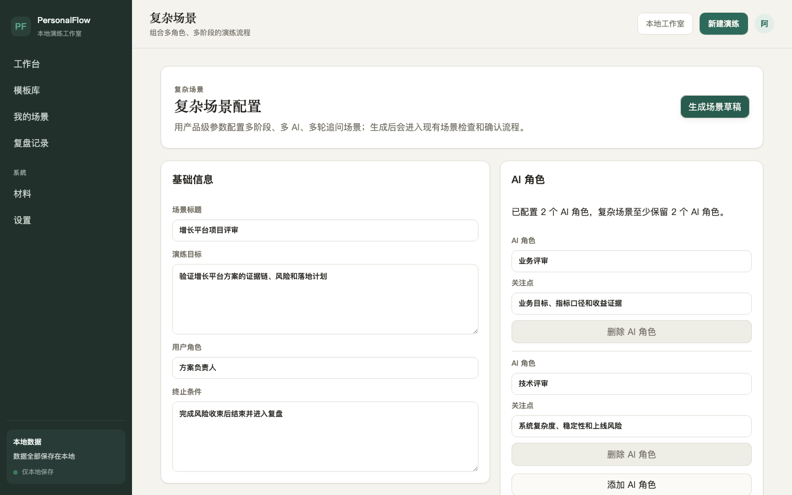
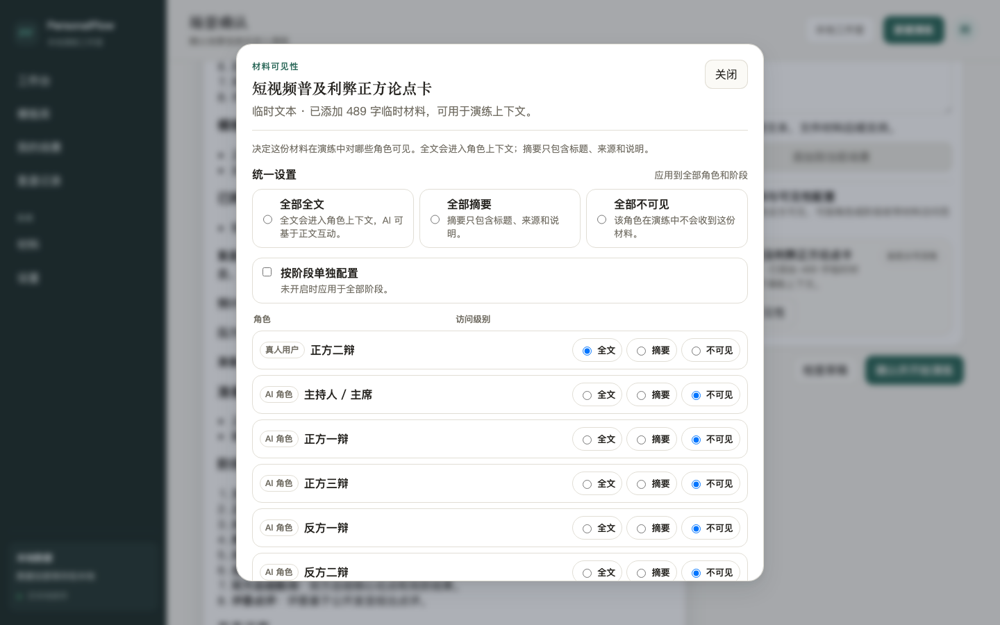

PersonalFlow 是一个本地优先的 AI 沟通演练 Web App。它把面试、转正答辩、项目评审、辩论、销售探索等高压场景，变成可反复演练、可分支重写、并基于真实对话证据复盘的训练闭环。

用户可以用 AI 创建自己需要的多角色沟通演练场景，完成真实演练，并基于对话证据获得可复核的复盘反馈。
面试、答辩、评审、辩论、销售探索——这些决定结果的对话往往只有一次机会，事前却缺少一个能反复练、能被追问、能拿到具体反馈的地方。看视频、背话术，无法模拟真实的多角色追问与临场压力。
PersonalFlow 以本地 Web App 的形式运行：React 前端、Fastify API、本地 SQLite。它默认不是托管 SaaS，你的场景、材料、演练记录与复盘报告都保存在本机，除非你主动导出或分享。
从场景定义到多角色演练，再到基于证据的复盘，PersonalFlow 覆盖完整闭环。
AI 可以同时扮演面试官、评委、反方辩手、客户、队友与裁判，按阶段分轮追问，模拟真实的多方压力。
求职面试、转正/晋升答辩、项目与论文评审、辩论赛、B2B 销售探索，开箱即用，快速上手。
通过表单化构建器，用产品级参数定义多阶段、多角色、多轮追问的复杂场景，无需手写散装 Prompt。
附加文本材料，并按角色/阶段精确控制谁能看到全文、摘要或完全不可见，制造真实的信息差。
复盘报告按维度打分，并引用真实对话片段作为证据，而不是给出泛泛评价，结论可复核。
可以从历史某一轮分支、撤回答案，练习另一种回应方式，保留每个版本以便对比。
场景、材料、演练记录与复盘全部保存在本地 SQLite，随包内置 Demo 数据库，启动即可浏览。
默认确定性 fake 模式适合本地开发与 CI；也可配置自己的 OpenAI-compatible 模型进行真实演练，凭据仅保存在本地。
把一个训练案例沉淀为包含角色、阶段、材料、规则与复盘维度的场景资产，面向场景作者可复用。
PersonalFlow 同时是「当前可用的本地演练 App」和「面向未来的 AI Roleplay 场景工程化框架」。
以下截图来自内置 Demo 环境，展示核心能力的真实交互。
「系统设计或架构取舍」场景：后端面试官分轮追问，右侧实时展示当前目标、当前发言者与版本历史，可从任意轮次分支或撤回重写。
Demo 工作台，一览本地已完成的演练历史。

场景档案、历史演练与复盘统一管理。

按维度打分并引用真实对话证据。

面试、答辩、评审、辩论、销售探索等模板。

用产品级参数定义多阶段多角色场景。

按角色设定全文 / 摘要 / 不可见。

前后端分离 + 确定性场景运行时 + 本地 SQLite，pnpm monorepo 组织，测试可回归。
先把标准和运行时做扎实，再逐步长出创建、评估、治理与生态能力。
本地 Web App 跑通核心闭环：内置模板、结构化自定义场景、多角色演练、材料可见性、分支重写与证据化复盘，随包内置 Demo 数据。
让用户用自然语言 + AI 创建自己需要的场景，而不只是使用内置模板，大幅降低创建门槛。
引入语音交互，让演练更贴近真实临场表达与节奏，覆盖口头表达训练。
沉淀 Scenario Spec、Runtime、Evaluation Protocol、Test Harness 与 Trace，让 AI Roleplay 场景成为可声明、可评估、可测试、可分发的工程资产。
在标准被采用后，逐步发展场景复用、协作与可选的托管能力，形成场景生产者与使用者的生态。
安装依赖并启动，会自动准备内置 Demo 数据库；打开浏览器即可浏览已完成的演练与复盘报告。